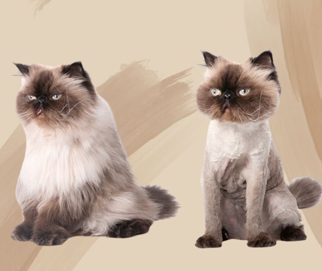
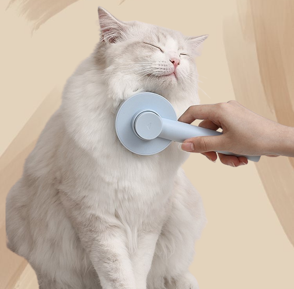

Therapeutic Bath with Calming Shampoo, Ear Cleaning, Facial, Brush and Blow-out. Crowned with a Bow or Bandana. They also receive a spritz of hypoallergenic perfume.

LION CUT
RM50
This trim is shaved very close to the skin on the body, belly and chest, leaving long hair on the legs, around the cat's head and leaving a “pom” on the tail.

TRIMMING
RM25
Your cat need to trim their hair/fur to keep the hair/fur healthy and fresh. Trimming can make your cat more comfortable to move around.